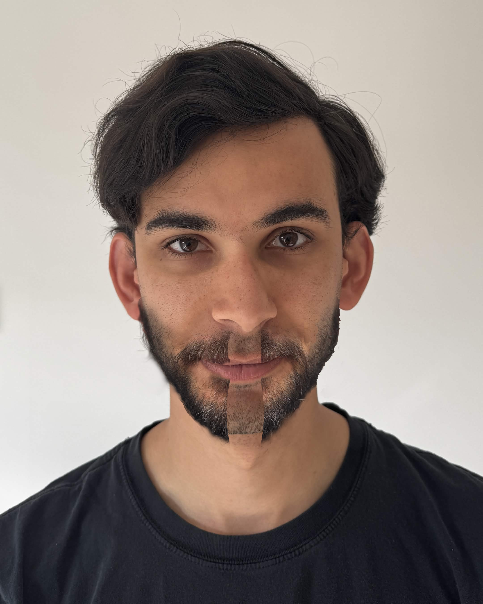

Movember 2026
This November, I'm raising money for the charity Movember. They do many things to support men's health and mental health such as:
- Providing resources for yourself, for a parent or a friend to help deal with issues such as depression or anxiety,
- Conducting studies into factors affecting the modern day perception and messaging around masculinity online,
- Funding training of mental health practitioners around the world.
The traditional way of fundraising for them is to grow a mustache, but I've already done that in October. What I'm doing this month is to ask each (remaining) week: into what shape do you want me to shave it??? Each week, there will be 4 options and you will VOTE with your money where £1 will correspond to 1 vote. At the end of the week, I'll shave according to the will of the crowds...
The Options
This week the facial-hair options are as follows:
- I shave off all the hair in a vertical strip around 2-3cm left and right of the axis of symmetry of my face, leaving the sides of my mustache, beard and neckbeard still present in the classic hairstyle called the critical strip.
- I shave off all the hair on the left side of my face but not the other to get the well-known twoface bristle.
- On either side of my face, I shave off a square of hair that I try to get as neatly right-angled as possible to get the famous biquadrangular spectacular.
- I attempt to cleanly shave along three randomly positioned straight lines that pass along my face, following the oft-used hair configuration known as the stochastic fantastic.


Thank you to Owl Hsiao for quickly making these amazing mock-ups of how I'd look in the four cases!
How to Vote
To vote, you need to send an email to iskander.mathews@atomicmail.io with:
- a clear option you're voting for,
- a screenshot of a receipt/the receipt showing me that you've paid some amount to my Movember page here.
Current stats
Here's a fun ASCII graph of the current submissions:
Critical Strip : ▇▇▇▇▇▇▇▇▇▇▇▇▇▇▇▇▇▇▇▇▇▇▇▇▇▇▇▇▇▇▇▇▇▇▇▇▇▇▇▇ 16.00
Twoface Bristle : 0.00
Biquadrangular Spectacular : 0.00
Stochastic Fantastic : 0.00